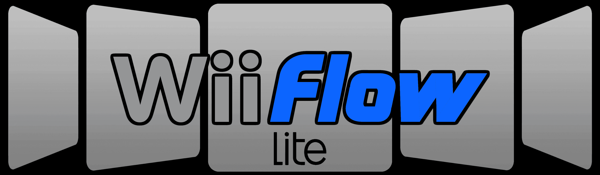
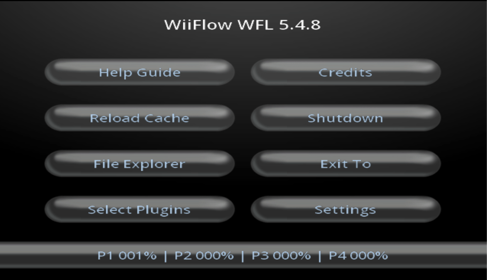

WiiFlow
If you need help for anything regarding this tutorial, please join the RiiConnect24 Discord server (recommended) or e-mail us at [email protected].

This is a quick start guide on how to use WiiFlow, a USB loader for the Wii that’s used to play games from a USB drive or SD card.
What you need
- A Wii
- A USB drive and/or SD card
- WiiFlow Lite
Make sure you have installed cIOS before following this!
We recommend you copy games over with Wii Backup Manager if you use Windows, Witgui if you use macOS, or Wii Backup Fusion for Windows, macOS, and Linux.
If you want to play games that are in NKit format, use this program to convert them to ISO first. You can also use a development build of Dolphin, right click on a game, and use “Convert File” to convert it.
If you are not copying games using Wii Backup Manager, Witgui, or Wii Backup Fusion, make a folder on the root of the USB drive or SD card named “wbfs” and put the games in there.
To play games, we recommend using an external hard drive for your Wii. Flash drives should be usable too, but external hard drives are recommended as they are more reliable, and can store more games.
Unlike USB Loader GX, WiiFlow can load games of an SD card.
Make sure your USB drive and/or SD card is formatted as FAT32 or NTFS. Do not format it as other types such as exFAT, extFS, or WBFS, the latter is an old format of storing Wii games.
Instructions
Downloading
- Extract WiiFlow and put the
appsandWiiFlowfolders on your USB drive or SD card. - Insert your USB drive, and SD card if you’re using one, into your Wii and launch WiiFlow from the Homebrew Channel.
Getting Started
This is not a full comprehensive guide on using WiiFlow. This is intended to help you learn how to use it, by giving you a quick start. You should be able to figure out all the great features of WiiFlow by using it.
- WiiFlow by default is set to only find games on the SD card. This can be changed by going in to settings, startup settings then turn off “Mount SD Only”.
- You can toggle between viewing Wii games, GameCube games, Wii Channels, Plugins, Homebrew apps by clicking the button second to last button on the right.
- You can download game covers by going to “Settings” then “Download Covers and Banners”
User Interface
When WiiFlow detects games, they are displayed in flow view. When you click on a game you are given these options:
- Star - Adds game to favorites.
- Bookshelf - Adds the game to 1 of 6 categories of your choosing.
- Gears - Opens the settings menu for the specific game. Changing settings here will only effect the game you changed the settings for.
- X - Deletes the game from the USB drive or SD card
When you bring the cursor to the bottom of the screen while in flow view, there are 6 icons:
- Bookshelf - View the games that are sorted in the categories you chose.
- Star - View games you favorited.
- Gears - Opens WiiFlow Settings.
- Game Type - Toggles between different types of apps/games. The logo changes depending on what game type you have selected.
- Disc - Loads game that is in disc drive.
- House - Will open this menu. This menu can also be launched by pressing the home button.

- Help Guide - Shows all the controls you can use in WiiFlow.
- Reload Cache - Press this when WiiFlow is not detecting a new game on the USB drive or SD card.
- File Explorer - Allows you to boot games/apps from anywhere on your USB drive or SD card.
- Select Plugins - Allows you to select plugins.
- Credits - Shows the people who worked on WiiFlow.
- Shutdown - Allows you to either go into full shutdown, or Standby mode.
- Exit To - Lets you exit to Wii Menu, HBC, neek2o, Priiloader and Bootmii.
- Settings - Will open the WiiFlow Settings menu
Options once complete
WiiFloWiki
WiiFloWiki is a great resource with information about WiiFlow.
Continue to RiiTag
RiiTag is a customizable gamertag for your Wii that WiiFlow Lite can integrate with. This is optional to set up.
Continue to site navigation
We have many other tutorials that you might like.